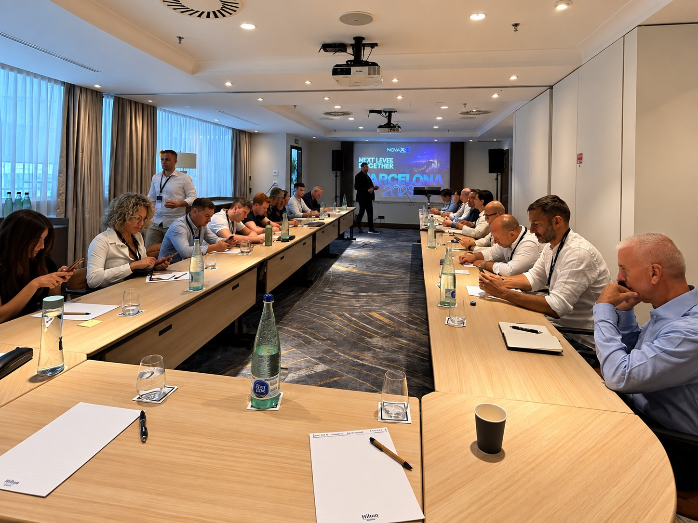
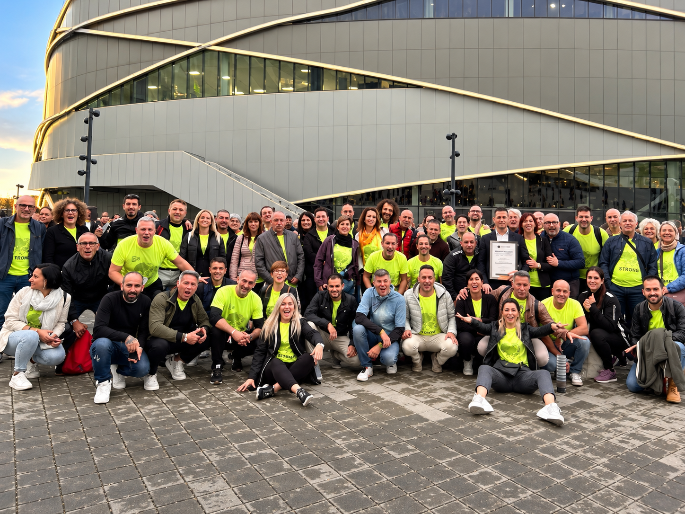

INTERCETTARE UN BISOGNO
Partire da esigenze reali, senza doverne creare di nuove.
Se l’unica strada che conosci per guadagnare di più è lavorare di più, fermati: voglio mostrarti un’alternativa.
Nessuna promessa di guadagno. Prima conosci il modello, poi decidi.
La vera domanda è:
quanto del tuo tempo devi vendere
per produrre quel reddito?
Perché se per guadagnare di più
devi aggiungere altre ore alla tua giornata,
il limite resta sempre lo stesso:
24 ore.
“Se per guadagnare di più devi lavorare di più, hai aumentato il reddito. Non necessariamente la libertà.”
Non si tratta di
lavorare di più.
E nemmeno di riempire le poche ore libere che ti rimangono.
Si tratta di iniziare a costruire qualcosa che, nel tempo,
non dipenda esclusivamente dalle ore che puoi dedicargli.
Perché il vero obiettivo non è aggiungere altro lavoro alla tua giornata.
È costruire oggi qualcosa che possa continuare a produrre valore anche domani.
“Non aggiungere ore al tuo lavoro.
Costruisci qualcosa che lavori anche nel tempo.”
Ogni giorno milioni di persone
acquistano prodotti e servizi.
Dall'altra parte ci sono aziende
che cercano continuamente clienti.
La domanda esiste già.
L'offerta esiste già.
La vera opportunità può essere
nel punto in cui queste due realtà
si incontrano.
E oggi tutto questo può essere fatto
attraverso gli strumenti digitali.
“Non devi cambiare
le abitudini delle persone.
Devi imparare a intercettarle.”
I nuovi giganti tecnologici connettono domanda e offerta. Airbnb, Booking, Uber e i marketplace.
Hanno costruito enormi business mettendo in relazione una domanda che esiste già con un’offerta. Nel nostro modello applichiamo lo stesso principio: intercettiamo la domanda, la connettiamo all’offerta e generiamo valore. Quando contribuiamo a creare valore, possiamo partecipare economicamente al valore generato.
Cinque principi per costruire nuove opportunità di reddito.
Partire da esigenze reali, senza doverne creare di nuove.
Farsi vedere dalle persone giuste, nel momento giusto.
Moltiplicare capacità, velocità e produttività.
Usare gli strumenti di oggi per lavorare senza confini.
Azioni precise e un processo da imparare e replicare.
Creator Generation nasce dall'esperienza sul campo, dal confronto con professionisti e da anni di lavoro nella vendita, nella comunicazione e nello sviluppo di reti commerciali.

Formazione, confronto e persone. Perché un sistema diventa realmente efficace quando dietro ci sono competenze, esperienza e un metodo da applicare.

15 anni di esperienza nel settore. 7 anni nel mondo digitale.
Un unico metodo operativo.
Abbiamo trasformato esperienza, strumenti e competenze in un protocollo
che ti accompagna passo dopo passo, indicandoti
cosa fare, come farlo e in quale ordine.
TU AGISCI. IL 5×5 TI INDICA LA STRADA.
Uno strumento immediatamente applicabile per permetterti di raggiungere i tuoi obiettivi. Con un impegno indicativo di 10 ore a settimana, ti guideremo verso un obiettivo compreso tra 500 € e 1.000 € al mese.
Step by step, costruiremo un’entrata ricorrente, progressiva e slegata dal tuo tempo, collegata a un’abitudine di migliaia di persone, per guidarti verso un obiettivo di 1.000, 2.000, 3.000 € o anche più al mese.
Il colloquio serve prima di tutto a mostrarti il modello in modo concreto.
Cosa fai oggi, che competenze hai, quanto tempo hai e cosa stai cercando.
Settore, esigenza intercettata e logica dell'intermediazione.
Come funziona concretamente, da dove derivano i compensi e quali sono le condizioni.
Azioni, strumenti, formazione, supporto e percorso operativo.
Valuti se il modello è compatibile con te. La decisione resta tua.
E va bene così. Cerchiamo persone che vogliano costruire qualcosa di concreto, mettendoci tempo, impegno e costanza.
Ecco alcuni esempi di persone reali che, partendo da zero, nell’arco di pochi mesi hanno già raggiunto i loro primi guadagni e risultati concreti.
“Sono già un imprenditore e lavoro nel settore dell’energia green, quindi cercavo qualcosa che potessi affiancare alla mia attività senza stravolgere quello che faccio ogni giorno. Ho iniziato da poco e, dedicandoci il tempo che riesco a ritagliarmi, dopo circa due mesi sto già superando i 500 euro al mese. Per me è un ottimo punto di partenza e soprattutto qualcosa che posso continuare a sviluppare nel tempo.
“Ho già il mio lavoro da dipendente e non avevo nessuna intenzione di lasciarlo. Cercavo piuttosto qualcosa da poter sviluppare nel tempo libero, senza aggiungere un altro lavoro tradizionale alle mie giornate. Ho iniziato da pochi mesi e sono già arrivato a oltre 500 euro al mese. Per me la cosa più interessante è vedere che posso far crescere questa seconda attività gradualmente, continuando nel frattempo il mio lavoro.”
“Cercavo un’attività che potessi gestire con i miei tempi e senza dover cambiare completamente la mia quotidianità. Ho iniziato gradualmente, dedicandoci qualche ora quando ne ho la possibilità. In pochi mesi sono arrivata a oltre 860 euro al mese. Può sembrare un piccolo inizio, ma per me è importante perché è qualcosa che sto costruendo passo dopo passo.”
“Sono pensionato e non cercavo certo un secondo lavoro a tempo pieno. Volevo semplicemente un’attività che mi tenesse attivo e che potessi gestire liberamente, senza orari rigidi. Ho iniziato da pochi mesi e oggi sto generando oltre 600 euro al mese. Mi piace soprattutto poter decidere io quanto tempo dedicarci e continuare a imparare qualcosa di nuovo.”
“Da libero professionista sono abituato a lavorare per obiettivi, ma spesso il reddito rimane direttamente legato al tempo che dedico al lavoro. Ho deciso di provare questa attività proprio per costruire qualcosa di diverso, senza abbandonare la mia professione. In pochi mesi sono arrivato a oltre 1.200 euro al mese. Adesso il mio obiettivo è continuare a farla crescere, mantenendola compatibile con il mio lavoro.”
Le testimonianze riportano esperienze e risultati personali. I risultati possono variare e non rappresentano una promessa o garanzia di guadagno.
Imprenditori, dipendenti, professionisti, pensionati e persone senza precedenti esperienze nel digitale. Percorsi diversi all'interno dello stesso progetto.
I risultati riportati sono individuali e si riferiscono ai compensi documentati mostrati. Non rappresentano una promessa o garanzia di guadagno. I risultati possono variare in base all'attività svolta, all'impegno, alle competenze e ad altri fattori.
Vieni a vedere numeri alla mano come funziona il modello. Fai domande. Chiedi dei rischi. Chiedi cosa dovrai fare. Poi decidi con la tua testa.
La landing deve togliere dubbi, non crearne altri.